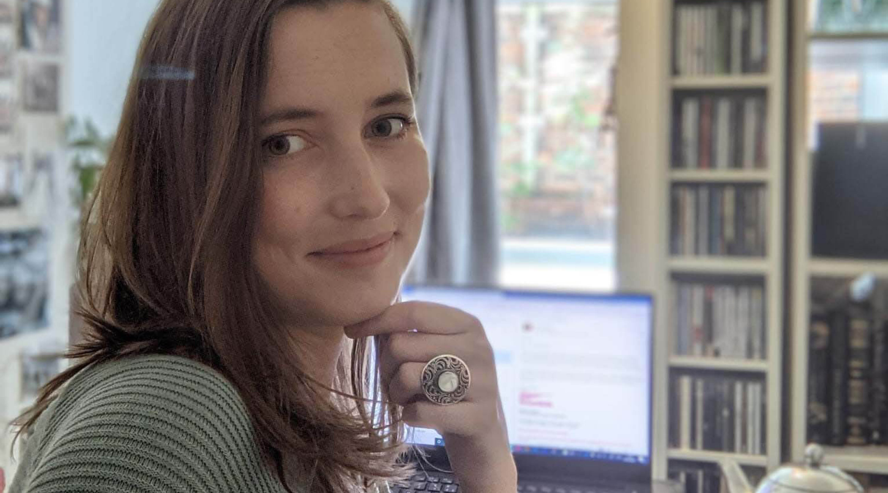

I’m Elise, a multi-lingual writer and designer based in London.
Since graduating from the London School of Economics with a MSc in Political Theory, I have worked in the screen industries, education and sustainable development sector. I am a highly motivated self-starter, believe in continuous self-development and am a collaborative worker with an all-round skillset and vision.
I'm currently enrolled in a course to transfer from marketing and content creation in to UX design. In my spare time I write fiction and essays for online publications. I feel passionate about translating my ideas into reality, whether that be digital or in print.
My skills include developing digital and printed content, writing for a wide range of stakeholders and audiences, ideation and creation of designs, video editing and updating, developing and maintaining websites.
Some of my independent writing work has been published online and in print, in Dutch and English. I'm currently working on two science fiction novels.
I graduated from university with an MSc in Political Theory from the London School of Economics and also have a BA (Hons) in Liberal Arts and Sciences.
I have also obtained coding certificates from Shecodes.io (HTML, CSS, Javascript, React and Responsive Design), completed Adobe Creative Suite training (InDesign, Photoshop, Illustrator, Premiere) and am currently enrolled in a post-Master in UX design.